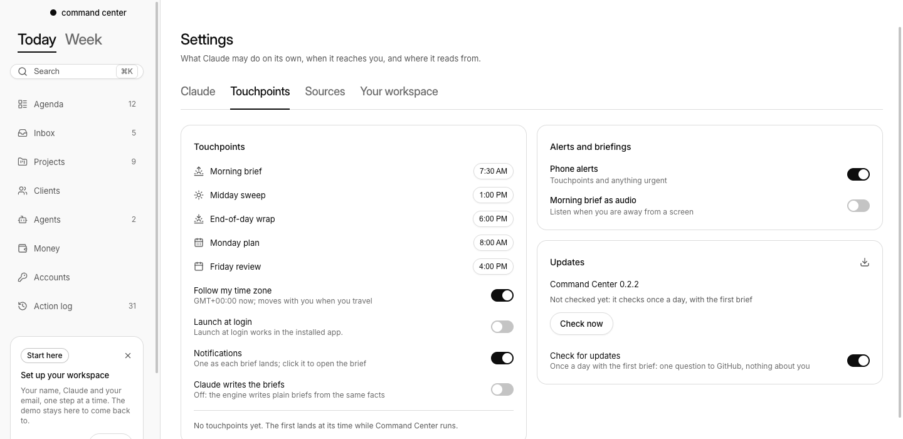

Touchpoints and alerts
Command Center reaches you at set times, not all day. Between them, only what truly can't wait gets through, and only if you turn that on.
The touchpoints
| When | What |
|---|---|
| 7:30 AM | Morning brief: what came in overnight, what Claude handled, what needs you first. |
| 1:00 PM | Midday sweep: what's new and what's due before the end of the day. |
| 6:00 PM | End-of-day wrap: what got done, what's waiting, what tomorrow starts with. |
| Monday 8:00 AM | The plan for the week: three suggested priorities, on the Week. |
| Friday 4:00 PM | The review: the week's revenue, receivables, project health and agents' work. |
Each comes as a notification that opens Today (or the Week). Move any of them to another quarter hour in Settings › Touchpoints; the three daily ones stay in order, at least an hour apart. They follow your computer's time zone, or one you keep with Follow my time zone off.
If the computer was asleep, the latest brief lands when it wakes; an earlier day's is let go. Pause holds them until tomorrow's first, from Settings, the tray or the command bar.

The briefs
Briefs are plain and free by default: the engine's own counts and words. Turn on Claude writes the briefs and Claude writes them instead, at one call per brief, under your cap. The newest brief shows on Today.
The tray and launch at login
Closing the window leaves Command Center running in the menu bar (Mac) or the notification area (Windows), so the touchpoints still land; it says so the first time. The icon's menu shows the newest brief and the next touchpoint, plays the brief aloud, pauses the touchpoints, and quits. On Windows, a click on the icon opens the window.
Launch at login starts it quietly into the tray when you sign in to your computer.
Phone alerts
What can't wait for the next touchpoint (due within 4 hours, or overdue) reaches your phone within a minute through ntfy, a free push app.
- In Settings › Touchpoints › Phone alerts, Command Center makes a long random topic. It's kept in your keychain, like a password.
- Install ntfy on your phone and subscribe to that topic (or use your own ntfy server).
- Choose Send a test, then turn phone alerts on. It tells you exactly what will leave the computer and where.
Quiet hours are 9 PM to 7 AM, with at most 10 alerts a day; you can change both. Each alert goes once. Alerts name the item and its client only if you turn on Say what each item is; they never carry a message's text or a link.
The morning brief, read aloud
Turn on Morning brief as audio and your computer's own voice reads the 7:30 AM brief as it lands. Any brief also plays from the tray's menu or Today's brief card, with Stop while it reads. Nothing leaves the computer: it's the system's own speech, not a cloud voice.
If notifications don't show
On a Mac, allow them in System Settings › Notifications › Command Center. Settings › Touchpoints says when the system didn't show the last one. Your briefs still land on Today and in the tray either way.